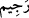

gibi (
) yâni “iniş” emrinden maksad da budur. Yoksa İblis’e semâdan yere iniş emri
verilmiş değildir. Çünkü Âdem’e verdiği vesvese, bu kovmadan sonra vâkî olmuştur.
Fakîr (Bursevî) der ki: İblis’in suçunun büyüklüğü, vesvese verdiği ana kadar
beklemesini değil, semâdan arza inmesini gerektirmiştir. Vesvese işinin ise, -Allah’ın
imtihan etmesi maksadıyla- göğe yükselme şeklinde olması mümkündür. Cennete
semâda iken girmesi cennete arzda iken girmesinden daha kolay değildir, zira cennete
girmek ona ister arzda olsun ister semâda olsun -imtihan şeklinde olma durumu hâriç-
kesin olarak yasaklanmıştır. Ayrıca ilâhî hikmet, hilkati ile övünen İblis’i, yaratılmış
olduğu hilkat özelliklerinden çekip sıyırmayı gerektirmiş; Allah onun hilkatini
değiştirmiştir. Böylece bembeyaz bir varlık olan İblis kapkara kesilmiş; güzel bir
yaratık iken çirkinleşmiş; nûrânî iken zulmânîleşmiştir. Diğer isyankârların durumu da
böyledir: İsyanları yüzünden bâtınları değiştiği gibi isyanın uğursuzluk ve bereketsizliği
yüzünden zâhirleri de değişir. Bunlardan birine firâsetlice ve gerektiği şekilde
bakabilirsen, üzerinde kararmışlığın izlerini görebilirsin. Zira mâsiyet zulmet; mâsiyeti
işleyen de zulmânî iken; tâat nur; tâat işleyen de nûrânîdir. Hâsılı herkes kendi durumunu
yansıtan bir giysiye bürünür.
“Sen artık kovulmuş birisin.” Bu ifâde, oradan niçin çıkarıldığını göstermektedir. (
), bütün hayırlardan ve değer verilme durumundan uzaklaştırılmayı ifâde eder. Tard
edilme durumu (
) yâni “taşlanma” ile anlatılmıştır; çünkü kovulan birinin taşlanarak
kovulması onun değersizliğini göstermek amacına mâtuftur. (
) lafzı, semâvî veya esîr
(ether) şeklindeki ateş korlarıyla kovulan şeytan anlamında da olabilir. Hakikat ehlinden
bazıları bu ikinci görüşü benimsemiştir.
78. Cezâ gününe kadar lânetim senin üzerindedir! buyurdu.
(
), cezâ ve ukûbet günü demektir. Tâ cezâ gününe kadar lânetim; yâni rahmetten
uzaklaştırışım üzerindedir. Lâneti böyle açıkladık; çünkü (
) masdarı ya “kovma” ya
da “kızgın bir şekilde uzaklaştırma” anlamındadır. Öyle ki Allah için düşünüldüğü
takdirde âhirette azap; dünyada ise ilâhî feyiz ve tevfîkı kabûle elverişlilikten ayrılma
anlamına gelir. İnsanlarla ilgili düşünüldüğü takdirde ise birine bedduâ etmek anlamına
gelir. “Lânet senin üzerinedir” (el-Hicr 15/35) âyetinde izâfetsiz kullanılmasına
rağmen burada izâfetle “lânetim” şeklinde kayıtlanmış olmasının sebebi şudur: Melekler
ve ins ü cinden gelen lânetler esasen hepsi Allah tarafındandır ve bunlar İblis’e
Allah’ın rahmetinden uzaklaştırılması için bedduâ etmektedirler.
Fakîr (Bursevî)’ye göre ise kimin lâneti olduğu belirtilmemiş bir lânet Allah’ın lâneti
olduğu için iki âyet de sonuçta aynı mânâdadır. Ancak mânâ “lânetim, sana bedduâ eden
kullarımın lisanıyla senin üzerinedir” şeklinde de olabilir.